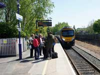
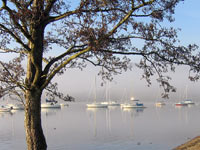
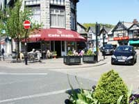
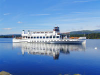
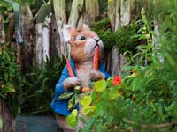
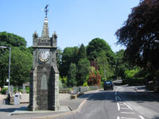

Windermere Tourist Information
The appeal of the town of Windermere is the offer of easy access to the lake from which it took it's name.
Windermere town originally called Birthwaite, quickly became established as a Lake District and Cumbria tourist destination and principal gateway to England's largest lake after the opening of the rail link with Oxenholme on the West Coast main line in 1847.
Windermere town and adjoining town of Bowness-on-Windermere have grown and merged to a point when they are as one in terms of an unbroken line of residential and holiday accommodations on either side of the main road to the lake. While it is not as close to the lake as Bowness, Windermere's convenient road and rail connections to other parts of the region and countrywide, and being within comfortable walking distance or a short bus ride from the Lake District and Cumbria's most famous stretch of water, makes Windermere a perfect location for long or short breaks and day trips.
If travelling by car, there is a Pay and Display car park on
Broad Street with toilets. It is a few minutes walk from the town centre.
Windermere town has a varied choice of holiday accommodation in the town centre and a little way beyond in residential areas. These range from serviced and self catering cottages and flats to traditional hotel, guest house, bed and breakfast, pub accommodation and luxurious boutique.
The town's shops, stores, restaurants, cafés, pubs, High Street Banks and Post Office are grouped on and around the main street and provide a comprehensive range of services for both tourists and residents. The
Post Office is on
Crescent Road. Open Monday to Friday 9am – 5.30pm and on Saturday's 9am – 12.30pm.
Windermere is a Lake District holiday location ideally placed for leisure activities for all ages close to the ever popular attractions of the homes of William Wordsworth and Beatrix Potter, lake cruises, water sports, adventure parks, historic houses and gardens, the not too distant unspoiled coastlines of the Furness and Cartmel Peninsulas and their wildlife and of course, Bowness-on-Windermere, the Lake District and Cumbria’s most popular visitor destination.
For Bowness on Windermere tourist information, click this link: Bowness on Windermere Tourist Information
 |
 |
 |
How to get there:
By rail:
From the West Coast Main Line, change at Carnforth or Oxenholme for Windermere.
By road:
Situated on the A591, Windermere and Bowness are easily accessible from the M6 motorway, exiting at J36.
Attractions and Things to See and Do Around Windermere |
 Lake WindermereTopping the list of things and places to see is Lake Windermere. It's only an open topped ten minute bus ride or a gentle downhill walk from Windermere town centre to the shores of England's largest and most visited lake and it's nearby attractions. There are regular sailings from Bowness Pier on 364 days a year calling at Waterhead (Ambleside), Lakeside, and, during the summer months, Brockhole Visitor Centre on request. A programme of sightseeing cruises glide peacefully along some of the most scenic water-borne journeys in the Lake District and Cumbria. www.windermere-lakecruises.co.uk |
|
| Brockhole Visitor Centre The Centre occupies a beautiful lakeside location of rare trees, plants, shrubs, gardens and a games lawn. It offers a mixture of individual and family activities throughout the season together with exhibitions, films, music, presentations, a bird hide, boat and canoe hire each weekend and during school holidays. For visitors arriving by boat, bus, bike or on foot, entrance is free. For cars there is a pay and display parking area. To get there, bus services 555 and 599 depart from Windermere Railway Station. |
Holehird Gardens The gardens stand in the grounds of Holehird Estate. It's a demonstration garden of almost 5 acres created by the Lakeland Horticultural Society. Only the gardens are open to the public and provide wonderful views and a wide diversity of plants. Beatrix Potter stayed here in 1889 and 1895 when she searched for fossils and fungi in the woods. www.holehirdgardens.org.uk |
 World of Beatrix Potter Attraction"Strikes a blow for Style and Intelligence" said the Times Literary Supplement. Winner of Local Food and Drink Award. A remarkable presentation of Beatrix Potter stories given life by an imaginative indoor re-creation of sights and sounds of the Lake District and interactive virtual walks. Convenient translations in French, Dutch, Japanese and Chinese are available. Tea rooms, gift shop, parent and baby facilities, children’s activity area and the child pleasing Peter Rabbit tea-parties throughout the year. Summer opening 10am. – 5.30 pm. Winter 10am. – 4.30pm. www.hop-skip-jump.com www.misspottermovie.co.uk |
|
| Town End Town End stands in the hamlet of Troutbeck a few miles from Windermere town centre. Built in 1626 as a home for wealthy farmer George Browne and his new bride it remained in the Browne family until 1943 when ownership was transferred to the National Trust. It has been preserved both inside and out in all respect as the Browne's had it through their long ownership. Open to the public. Check with Windermere Tourist Information Office near the railway station for full details. |
Water Sports Qualified instructors are available to teach the skills of canoeing, kayaking, sailing, wake boarding and wake surfing. Facilities include free parking, changing rooms and showers, equipment hire and a shop selling refreshments. Low Wood Watersports Centre. Telephone 015394-39441. Only a short distance away between Windermere town and Ambleside on the A591. Bus service 599/555 from Windermere station. |
 Kirkstone Pass Kirkstone PassThe Kirkstone Pass, en-route from Windermere town to the Ullswater Valley is the Lake District and Cumbria's highest Pass at 1,484 feet open to motor traffic. The name is said to come from a large rock close to the roadside at the summit which, in silhouette, has the appearance of a small church (kirk) “And you,whose church-like frame gives to this savage Pass it's name” wrote William Wordsworth. Close by and where “The Struggle” from Ambleside joins the A592, stands the historic Kirkstone Pass Inn whose 500 year old history includes tales of ghosts and the supernatural. Views from the pubs outdoor seating area are indeed super and natural and, as Wordsworth himself wrote “Who comes not hither ne'er shall know how beautiful the world below”. |
|
| Orrest Head Walk Orrest Head is one of the Lake District and Cumbria’s not to be missed viewing points. On the opposite side of the road to Windermere railway station and close to the traffic light controlled pedestrian crossing is a lane entrance signposted “Orrest Head”. From here it's a not too demanding ascent along a well marked track through woodland to the summit. Although the signpost states this is a 20 minute walk, please allow rather more time than that. Half an hour or 40 minutes would be reasonable. Once at the top, the rewards are those of wonderful views over Lake Windermere and notable Lake District fells. A view indicator identifies the fell groupings. Spectacular sunsets. |
|
| Queens Park A pleasant large open grassed area on Park Road, Windermere, containing a full sized football pitch, cricket square, crown green bowling, hard tennis court, children's play area, skateboard area and squash pavilion. |
Lakeland Motor Museum A wide ranging display of historic motor vehicles including the Campbell Bluebird Exhibition. Motorists gift shop and riverside café. Close to Newby Bridge and the Haverthwaite Steam Railway. Telephone 015395-58509. |
| Fishing Take a short car/passenger ferry journey from Ferry Nab, Bowness-on-Windermere to Esthwaite Water near Hawkshead. Esthwaite Water is the largest stocked lake in the North West of England. Tuition and rod hire available. Telephone 015394-36541 or enquire at Windermere Tourist Information centre near Windermere Railway station. |
Mountain Goat Tours A choice of Lake District and Cumbria guided tours to all parts of the region,or, create your own Lake District adventure with the option of exclusive private hire. www.mountain-goat.com |
 The Baddeley ClockThis is a small example of the history and heritage of the Lake District and Cumbria at the junction of Lake Road and New Road marking the boundary between the towns of Windermere and Bowness-on-Windermere. It was erected in 1907 as a memorial to M J B Baddeley who wrote several acclaimed guide books to the area. Nearby are the Millennium Gardens and public toilets. |
|
| Grizedale Forest The forest covers a good deal of the land between Coniston and Lake Windermere. Grizedale Forest is the complete adventure playground and outdoor experience for all ages. Here, the visitor will discover many outdoor activities including the “Go Ape” rope walking in the forest tree tops; a series of colour coded walking trails designed to suit all abilities; cycle and mountain bike tracks; a children's play area; café; gift shop; education centre plus more than 60 amazing wood sculptures scattered throughout the forest. Visitors can save journey time by taking the car/passenger ferry from Ferry Nab across Lake Windermere and then follow the road through Sawrey and Near Sawrey and on alongside Esthwaite Water to Hawkshead. At Hawkshead take first left to the forest. www.forestry.gov.uk/grizedale Mountain Bike information at www.grizedalemountainbikes.co.uk |
Windermere Library Ambleside to Auschwitz Permanent Exhibition which tells the story of 300 Jewish children who came to stay in the Lake District in 1945. Access to the exhibition can be arranged outside the normal opening times of 9.30am to 5pm on Monday's, Tuesday's, Thursday's and Friday's and 10am to 1pm on Saturday's. Closed all day on Wednesday's and Sunday's. Internet and wi-fi access. Ellerthwaite Road. Telephone 015394-62400. |
| Old Laundry Theatre. Bowness The comfortable 250 seat theatre is located within the Beatrix Potter Museum on Crag Brow. It is Cumbria’s only professional in-the-round-theatre. This year our lively annual season of music, theatre, comedy and film commences in August and finishes in December. Programme details can be found on www.oldlaundrytheatre.co.uk |
Blackwell Arts and Crafts House. Bowness Blackwell has been described as one of the countrys most important examples of Arts and Crafts architecture. Visitors to the house are free to move around without restrictions of roped off areas. Window seats provide excellent vantage points from which to admire the stunning scenes of lake and mountains. There’s chance to browse the contemporary craft shop and book shop, stroll the terraces and landscaped gardens and enjoy refreshments of home made food and drinks in the tea shop. Free parking. Disabled facilities. Great photography opportunities. One and a half miles south of Bowness. www.blackwell.org.uk |
| Amenities around Windermere Railway Station
Served by a single track branch line from Oxenholme on the West Coast main line from London to Scotland, this important little rail gateway to Windermere was recently awarded a top Visitor Friendly Award. |
|
| Windermere Tourist Information Office On Victoria Street. Limited spaces for one hour free parking alongside the building. |
Country Lanes Cycle Centre Specialising in cycle and mountain bike hire, group cycle,, cycle tours, bespoke holidays and corporate events. Adjoining the station building. www.countrylaneslakedistrict.co.uk |
| Taxi rank and Bus connections Immediately outside the station booking office. |
Booths Supermarket Full range of foodstuffs, newspapers, tobacco, soft and alcoholic drinks. Café/restaurant and toilets. |
| Public Telephone Box Next to the station building. |
Cash Points (ATM) One inside Booths Supermarket and one on the outer wall of the supermarket building near the bus stops. Two on Crescent Road in the town centre at HSBC and Barclays. |
| Lakeland Store Lakeland is an established Windermere visitor attraction. It's the home of creative kitchenware, unusual gifts and a café/restaurant. |
Parking Pay & Display parking (Limited spaces) Opposite the station building. |
Food and Drink in Windermere |
| Hooked At Windermere's newest seafood restaurant opened November 2010, owner Michael Gould strives to serve you the freshest & tastiest seafood with flavours & influences from the Mediterranean, South East Asia & Australasia. Chef Paul White changes the menu daily depending on availability & local fish supplier C & G Neve, in nearby Fleetwood are known for supplying the freshest & highest quality to some of the northwest's finest restaurants. www.hookedwindermere.co.uk |
Prince of India Crescent Road, Windermere. Phone: 015394 45244 |
Oriental Kitchen 13, Crescent Road, Windermere. Phone: 015394 45110 |
|
| Sail 'N' Dine An experience to enjoy the beauty of the English Lake District combined with fine wines and first class food. Enjoy a meal on a 32 foot yacht on Lake Windermere, England’s largest lake. For details call or e-mail Phone: 07976 214569 Email: info@sailndine.co.uk www.sailndine.co.uk |
Royal Tea Garden Royal Square, Bowness. Phone: 015394 45510 |
Mrs B’s Restaurant Ellerthwaite Square, Windermere. Phone: 015394 42363 |
|
| Messina Restaurant Beresford Road, Windermere. Phone: 015394 88488 |
Robertos European with Spanish influences. Queen Street, Bowness. Phone: 015394 43535 |
Rastellis Pizzeria Lake Road, Bowness. Phone: 01539444227 |
Rumours Pizzeria Lake Road, Bowness. Phone: 015394 44382 |
| Villa Positano Ash Street, Bowness. Phone: 015394 45663 |
Trattoria Ticino Swiss/Italian cuisine. Quarry Rigg, Bowness. Phone: 015394 45786 |
Francines Coffee House & Restaurant 27a Main Road, Windermere Phone: 015394 44088 |
Jerichos Restaurant Birch Street, Windermere. Phone: 015394 42522 |
Transportation in Windermere |
| Taxi Services: | ||
| Pegasus Taxis & Travel This Bowness on Windermere based service provides local and long distance journeys; airport transfers; wedding hire; courier work; hen & stag party hire; school runs and safe and secure luggage storage at their Bowness office premises. Phone 015394 48899 Fax 015394 44453 www.pegasustaxisandtravel.com |
Windermere Taxi Service Courteous, friendly reliable service. Local and long distance. Phone: 015394 42355 www.windermeretaxisonline.com/Windermere_Taxis |
Lakes Taxis Prompt and reliable. Phone: 015394 44055 or 46777 |